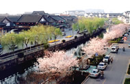
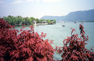
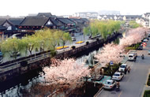
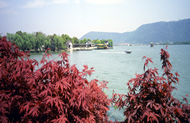

组织构架
主办单位：
《福布斯》中文版
联合主办：
常熟市人民政府
特别支持单位：
波司登国际控股有限公司
江苏常熟农村商业银行股份有限公司
江苏隆力奇生物科技股份有限公司
合作媒体
独家门户网站支持
特别支持媒体
特邀财经网站支持
特邀海外支持媒体
战略媒体支持：
友情支持：
参会报名
县域经济是国民经济的重要组成部分，也是国民经济的基本单元，只有县域经济得到充分发展，才能从根

活动信息
详情垂询：《福布斯》中文版
赞助及合作 朱先生
电话 021-68413905
媒体及注册 陈小姐
电话 021-68412936
报名及参会 嵇先生
电话 021-68412965
传真： 021-68412942
021-68413905
官方网址：www.forbeschina.com
赞助及合作 朱先生
电话 021-68413905
媒体及注册 陈小姐
电话 021-68412936
报名及参会 嵇先生
电话 021-68412965
传真： 021-68412942
021-68413905
官方网址：www.forbeschina.com
常熟市情况介绍
BACKGROUND
常熟位于中国经济发展最具活力的“长三角”核心地带，沟通苏南苏北，邻近上海浙江，市域面积1264平方公里，常住人口106.6万。近年来，常熟加快实施“工业立市、旅游活市、商贸富市、文化强市、科教兴市”战略，经济社会持续快速健康发展，综合实力稳居全国百强县（市）前列。在第九届全国县域经济基本竞争力排名中列区域经济强县统筹发展组团并列第一名，荣获“中国全面小康十大示范县市”称号。
常熟是一座历史底蕴深厚的文化之城
 常熟有着3000年文明史、1700年建城史，是江苏县（市）中唯一的国家历史文化名城，有国家级文保单位綵衣堂、方塔、脉望馆3处。常熟自古人杰地灵，才俊辈出，商末让国南来的虞仲、春秋时期孔子十大弟子之一的言偃、元代大画家黄公望、明末文坛泰斗钱谦益、晚清帝师翁同和等，都佐证了常熟丰厚的人文底蕴。常熟有崇尚教育、尊重知识的传统，历史上曾出过8名状元、9名宰相、485名进士；虞山画派、虞山诗派、虞山琴派、虞山印派等在中国文化艺术发展史上具有重要影响；当代科学院、工程院“两院”院士中常熟籍的就有王淦昌、李强、张光斗等22人。近年来，常熟加大文化与经济融合力度，文化事业全面繁荣，先后被评为“中国曲艺之乡”、“中国书法之乡”、“中国民间文化艺术之乡”、“全国群众艺术示范基地”和“全国文化信息资源共享工程示范市”。
常熟是一座生态环境优美的山水之城
 常熟古城三湖环抱、依山而筑，素有“七溪流水皆通海，十里青山半入城”的美誉，拥有闻名遐迩的沙家浜等国家4A级景区4处。近年来，常熟大力加强生态建设，注重环境保护，城市绿化覆盖率达52%，人均公共绿地19.9平方米，全年空气质量优良天数达352天，环境质量综合指数达到96.58。利用自然山体、湖泊资源，精心打造虞山尚湖、沙家浜、昆承湖以及南湖生态湿地为核心的近100平方公里生态圈。先后获得全国同类城市中首家“国际花园城市”、“国家园林城市”、全国首批“国家生态市”，以及“国家环保模范城市”、“全国绿化模范城市”、“中国优秀旅游城市”、“中国人居环境范例奖”等荣誉称号，被确定为第二批全国生态文明建设试点城市。
常熟是一座生机活力勃发的创新之城
 改革开放以来，常熟先后闯出了“离土不离乡，进厂不进城”的“碧溪之路”，“市场带动产业、产业提升市场”的“富民之路”，民众无阻碍自主创业、企业无障碍自主发展的民营经济“腾飞之路”，被评为“影响中国改革十大创新城市”。近年来，常熟大力构建产业优势明显、政策体系完善、支撑作用突出的科技创新体系，跻身“建设创新型国家百强县”前三甲。在加快提升传统产业的基础上，制订出台了装备制造、汽车零部件、太阳能光伏、电子信息、软件与服务外包、生物医药六大新兴产业发展规划。全市建成高分子新材料、电气机械2个国家级产业基地，分别设立国家级、省级企业博士后工作站3家和6家，拥有国家示范生产力促进中心1家、省企业院士工作站3家、省企业研究生工作站13家、省工程技术研究中心31家，按新标准认定高新技术企业65家，高新技术产业产值占规模以上工业产值的比重达21.4%。常熟2009年专利申请突破1万件，率先跨入“全国科技进步示范市”行列，被列为国家可持续发展实验区、国家知识产权试点城市，成为全省首批“信息化和工业化融合实验区”。
改革开放以来，常熟先后闯出了“离土不离乡，进厂不进城”的“碧溪之路”，“市场带动产业、产业提升市场”的“富民之路”，民众无阻碍自主创业、企业无障碍自主发展的民营经济“腾飞之路”，被评为“影响中国改革十大创新城市”。近年来，常熟大力构建产业优势明显、政策体系完善、支撑作用突出的科技创新体系，跻身“建设创新型国家百强县”前三甲。在加快提升传统产业的基础上，制订出台了装备制造、汽车零部件、太阳能光伏、电子信息、软件与服务外包、生物医药六大新兴产业发展规划。全市建成高分子新材料、电气机械2个国家级产业基地，分别设立国家级、省级企业博士后工作站3家和6家，拥有国家示范生产力促进中心1家、省企业院士工作站3家、省企业研究生工作站13家、省工程技术研究中心31家，按新标准认定高新技术企业65家，高新技术产业产值占规模以上工业产值的比重达21.4%。常熟2009年专利申请突破1万件，率先跨入“全国科技进步示范市”行列，被列为国家可持续发展实验区、国家知识产权试点城市，成为全省首批“信息化和工业化融合实验区”。
常熟是一座历史底蕴深厚的文化之城
 常熟有着3000年文明史、1700年建城史，是江苏县（市）中唯一的国家历史文化名城，有国家级文保单位綵衣堂、方塔、脉望馆3处。常熟自古人杰地灵，才俊辈出，商末让国南来的虞仲、春秋时期孔子十大弟子之一的言偃、元代大画家黄公望、明末文坛泰斗钱谦益、晚清帝师翁同和等，都佐证了常熟丰厚的人文底蕴。常熟有崇尚教育、尊重知识的传统，历史上曾出过8名状元、9名宰相、485名进士；虞山画派、虞山诗派、虞山琴派、虞山印派等在中国文化艺术发展史上具有重要影响；当代科学院、工程院“两院”院士中常熟籍的就有王淦昌、李强、张光斗等22人。近年来，常熟加大文化与经济融合力度，文化事业全面繁荣，先后被评为“中国曲艺之乡”、“中国书法之乡”、“中国民间文化艺术之乡”、“全国群众艺术示范基地”和“全国文化信息资源共享工程示范市”。
常熟是一座生态环境优美的山水之城
 常熟古城三湖环抱、依山而筑，素有“七溪流水皆通海，十里青山半入城”的美誉，拥有闻名遐迩的沙家浜等国家4A级景区4处。近年来，常熟大力加强生态建设，注重环境保护，城市绿化覆盖率达52%，人均公共绿地19.9平方米，全年空气质量优良天数达352天，环境质量综合指数达到96.58。利用自然山体、湖泊资源，精心打造虞山尚湖、沙家浜、昆承湖以及南湖生态湿地为核心的近100平方公里生态圈。先后获得全国同类城市中首家“国际花园城市”、“国家园林城市”、全国首批“国家生态市”，以及“国家环保模范城市”、“全国绿化模范城市”、“中国优秀旅游城市”、“中国人居环境范例奖”等荣誉称号，被确定为第二批全国生态文明建设试点城市。
常熟是一座生机活力勃发的创新之城
改革开放以来，常熟先后闯出了“离土不离乡，进厂不进城”的“碧溪之路”，“市场带动产业、产业提升市场”的“富民之路”，民众无阻碍自主创业、企业无障碍自主发展的民营经济“腾飞之路”，被评为“影响中国改革十大创新城市”。近年来，常熟大力构建产业优势明显、政策体系完善、支撑作用突出的科技创新体系，跻身“建设创新型国家百强县”前三甲。在加快提升传统产业的基础上，制订出台了装备制造、汽车零部件、太阳能光伏、电子信息、软件与服务外包、生物医药六大新兴产业发展规划。全市建成高分子新材料、电气机械2个国家级产业基地，分别设立国家级、省级企业博士后工作站3家和6家，拥有国家示范生产力促进中心1家、省企业院士工作站3家、省企业研究生工作站13家、省工程技术研究中心31家，按新标准认定高新技术企业65家，高新技术产业产值占规模以上工业产值的比重达21.4%。常熟2009年专利申请突破1万件，率先跨入“全国科技进步示范市”行列，被列为国家可持续发展实验区、国家知识产权试点城市，成为全省首批“信息化和工业化融合实验区”。
Copyright @ 2009 Forbeschinamagazine.com. All right Reserved